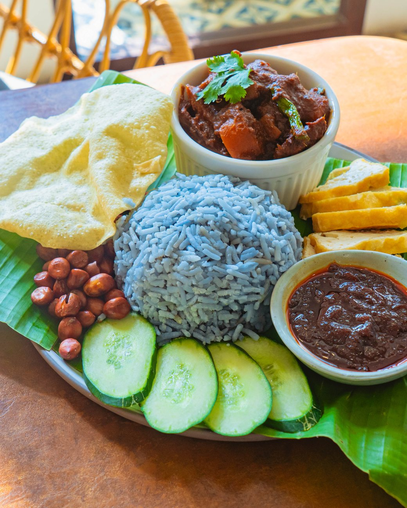
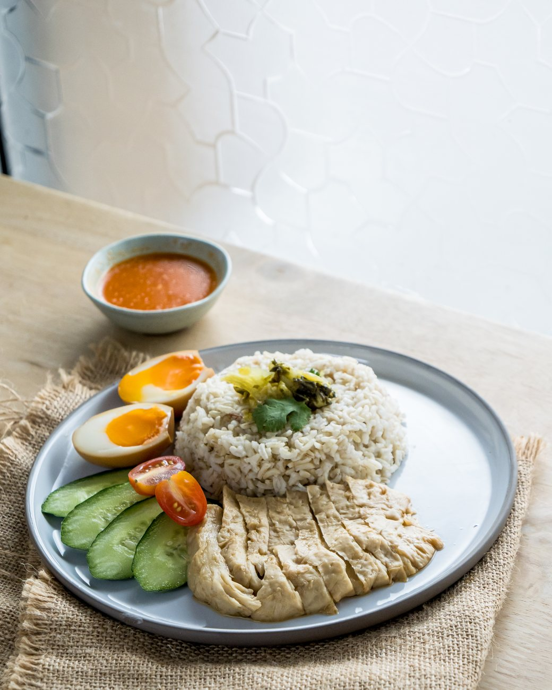
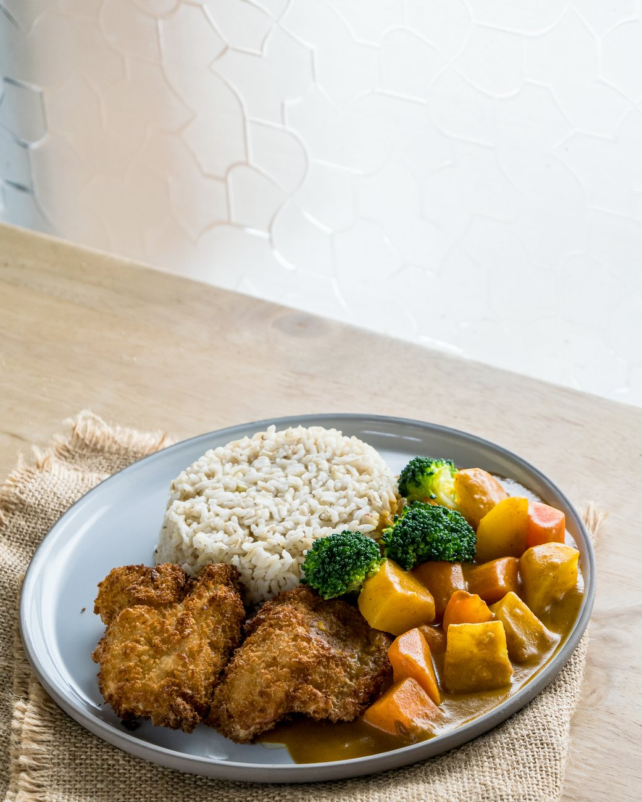
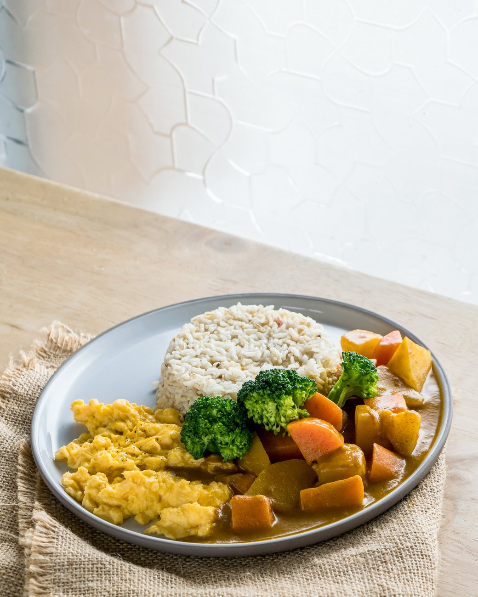
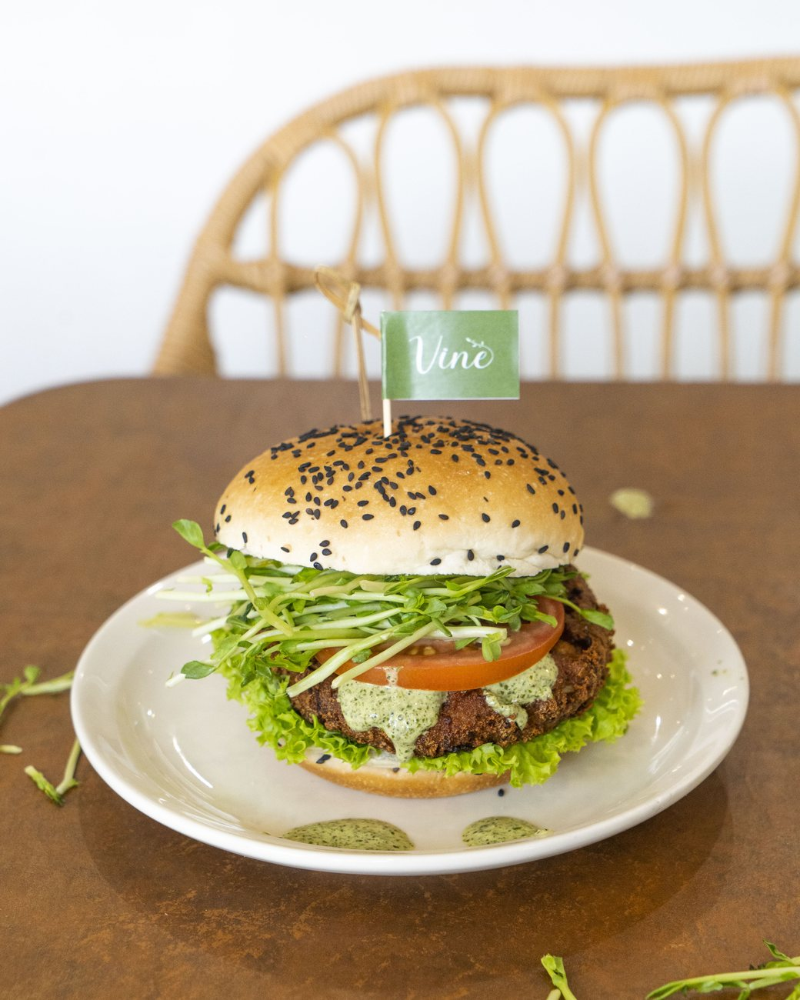

Sunway Iskandar · Johor Bahru
A meat-free cafe for every day.
Local favourites and Western comfort food, all meat-free. Open daily, 8:30 AM to 9:30 PM.

About Vine
Meat-free, from breakfast to dinner
Vine Cafe is a meat-free cafe at 16-01 Laman Niaga Sunway, Sunway Iskandar, Johor Bahru. There is no meat or fish on our menu, and we serve from breakfast and brunch right through to dinner, every day.
Our menu brings together local favourites and Western comfort food: Signature Laksa Noodle, Signature Orh Luak (our meat-free take on the oyster omelette), Blue Pea Nasi Lemak and Hainanese Chick'un rice, alongside Japanese curry, pasta-style noodles, sourdough brunch plates and pizza. Many of our rice dishes come on brown rice, and we cook with lion's mane mushroom, mock fish and tofu.
To drink, choose from Lavazza coffee, matcha and hojicha lattes, fruit teas and our Vine Signature cucumber and white grape soda.



Vine favourites






Visit us
Hours & location
- Open
- Daily, 8:30 AM – 9:30 PM (including Wednesdays)
- Address
- 16-01, Laman Niaga Sunway, Persiaran Medini 3,
Sunway Iskandar, 79250 Iskandar Puteri, Johor
Good to know
- Daily, 8:30 AM – 9:30 PM (including Wednesdays)
- Dine in or take away. WhatsApp +60 13-414 4199 to book a table or order takeaway.
- Delivery: order on GrabFood.
- Everything is meat-free. Some dishes contain egg or dairy; many can be made without egg or dairy, so just ask our team when you order.
- Free parking right outside.
- In Sunway Iskandar, Iskandar Puteri, close to the Medini offices.